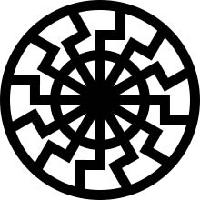

Сергей Телегин
Алхимия Черного Солнца
«И когда Он снял шестую печать, я взглянул, и вот, произошло великое землетрясение, и солнце стало мрачно как власяница, и луна сделалась как кровь» (Апок. 6, 12). «И вдруг, после скорби дней тех, солнце померкнет, и луна не даст света своего, и звезды спадут с неба, и силы небесные поколеблются» (Мф. 24, 29). «Но в те дни, после скорби той, солнце померкнет, и луна не даст света своего» (Мк. 13, 24). «Звёзды небесные и светила не дают от себя света; солнце меркнет при восходе своем, и луна не сияет светом своим» (Ис. 13, 10). «Солнце превратится во тьму и луна — в кровь, прежде нежели настанет день Господень, великий и страшный» (Иоиль. 2, 31).
Солнце станет чёрным, а луна красной. Это говорит об изменении состояния реальности, о формировании противоположной реальности, где яркое дневное светило становится тёмным, а мертвая луна наполняется кровью. Можно подумать, что речь идет о простом солнечном и лунном затмении. Всё же надо понимать, что сакральный текст описывает реалии не нашего мира, а высшего бытия. При внимательном прочтении становится видно, что эти отрывки представляют собой описание процесса алхимической трансмутации материи. Кстати, некоторые алхимики были убеждены в том, что Солнце является холодным телом, а его лучи — тёмными. Речь идет о Чёрном Солнце алхимии. Хотя у Чёрного Солнца имеется множество значений (от психологического до политического), мы сосредоточим внимание именно на алхимической и мифологической составляющей этого сакрального знака.
В эзотеризме Чёрное Солнце — это Центральное Солнце, Истинное или Древнее (Изначальное) Солнце нашей Солнечной системы или даже всей Галактики Млечного Пути. Это незримый центр Вселенной, чёрный свет которого наделяет особой энергией (Вриль) только тех людей, которые в силу своей духовной эволюции способны воспринять её. Поскольку речь идёт о Центральном Солнце, то мистически оно может быть связано лишь с сакральным Центром нашей планеты — с Северным полюсом. Действительно, еще в Гиперборее сложился культ дневного Золотого Солнца и ночного Чёрного Солнца. Чёрное Солнце — это наиболее эзотерический знак полярной Ultima Thule. Сама суть тайны Гипербореи не могла быть передана лучше, чем через сакральный знак Чёрного Солнца. Когда же затонули последние земли Гипербореи и Северный полюс покорился наступающему мировому льду, ее выжившие потомки двинулись на юг, неся в себе энергию Чёрного Солнца. Чёрное Солнце, Солнце Мертвых появляется у разных народов под именами Одина, Осириса, Диониса, Рудры-Шивы и др.
Как видно из мифов, лишь то племя, которое зародилось в арктическом регионе в силу многовекового отбора во льдах и в условиях продолжительной арктической ночи, могло воспринять эту энергию и управлять ею. Энергия Чёрного Солнца придавала особую силу нордической расе, формировала особые способности этого племени в области духа, а также направляла ее волю к власти. Так Чёрное Солнце стало источником свободы и власти нордического племени. Поскольку, как мы считаем, алхимия является осколком древней гиперборейской науки, образ Чёрного Солнца в ней опирается на ту Высокую Примордиальную Традицию, которая сформировалась на самом Северном полюсе.
Действительно, Чёрное Солнце — это, прежде всего, Солнце дня зимнего солнцестояния. Это непроявленное, невидимое Солнце, неподвижное Солнце Северного полюса, «не подверженное изменениям, неопределенное, Верховное, Не-двойственное», — как разъясняет исследователь этого феномена Алехандро Ароча [1]. Как это видно, Чёрное Солнце называется так, поскольку оно расположено в надире. Это Солнце, находящееся ниже линии горизонта (под землёй, во тьме). Алхимически Чёрное Солнце представляет prima materia до начала работы с ней. Как замечал один из крупнейших испанских традиционалистов Хуан Атиенса, пребывание Чёрного Солнца в надире равносильно для человека погружению в самые нижние уровни собственного бессознательного [2]. В противоположность ему Солнце в зените означает алхимическое золото. Поэтому, по словам Альберта Фаргаса, «переход надира в зенит представляет путь алхимического делания» [3]. Стоит ли говорить, что на Северном полюсе точка надира и есть дата зимнего солнцестояния.
Известно, что алхимия должна повторить и лишь ускорить космогонический процесс. Первичная непроявленность, затемнённость или пустота Чёрного Солнца есть «направленность внутрь себя», самодостаточность, автаркия. Чёрное Солнце означает божественное Ничто до начала творения. Поэтому оно и связывается с prima materia. Так же и мир творится «в начале» — в трансцендентном боге[1], замкнутом в самом себе, в Ничто, в Чёрном Солнце. Бог — бесконечность, Ничто, свернулся, чтобы освободить место для творения. Мистически и алхимически этот этап и именуется Чёрным Солнцем.
Вполне понятно, почему Чёрное Солнце оказывается постоянным образом в алхимии. «Чёрный материальный огонь» или «чёрное солнце» означает стадию разложения первичной материи. Это «внешнее солнце», «тьма, поглощающая огонь», «тень солнца». Так может называться и обычное неочищенное золото, которое только должно быть очищено. Чёрное Солнце — это солнце «ниже горизонта», скрытое светило, пребывающее тайно, присутствующее небытийно, «ниже уровня» [4]. Это очень хорошо представлено в трактате Соломона Трисмосина «Splendor Solis».
Миф о Чёрном Солнце несет в себе космический первобытный ужас для всякого, кто осмелится соприкоснуться с ним.
Что такое Чёрное Солнце? Р. Мунд дает следующее определение: «В мифологии… “Чёрное Солнце” является символом находящегося позади Земли Центрального Солнца и в образе клетчатой шахматной доски является подлинным указанием на сияющее внутри Полой Земли пурпурное Солнце» [5]. Чёрное Солнце — это «высшее солнце», Гиперион, который освещает земли «высших людей», гипербореев, жителей Северного полюса. Восход чёрного светила происходит на севере и наблюдать его можно лишь на священном Полюсе. Таинственные группы единомышленников и сегодня продолжают верить в существование в Арктике скрытого от глаз Центра, который они называют «Голубой остров». Озарённый лучами Чёрного Солнца, используя энергию Вриль[2], Хварено[3], и силу Зелёного Луча[4], он станет местом возрождения жизни, основанной на примордиальной Традиции. Однако сейчас Чёрное Солнце остается невидимым, поэтому его черные лучи делают невидимой и Гиперборею.
Гиперион — это «старое», тёмное солнце. Он считался отцом Гелиоса, Селены и Эос — Солнца, Луны и Зари нашей эпохи [6]. В алхимии Гипер??он, ка?? пишет Фулканелли, «означает то, что поднимается из земли, то есть над могилой матери», извлекает из нее «душу, пламя или скрытый огонь, — поднимает её вверх в виде чистой прозрачной воды», то есть совершает сублимацию первичной материи. Миф о солнечной Гиперборее и о явлении в ней Аполлона каждые 19 лет рассказывает о тех временах, когда это «иное солнце» было ярким светилом на арктическом небе, даруя свет и тепло жителям Северного полюса. Затем оно угасло, превратилось в Чёрное Солнце, и Гиперборея скрылась в его тёмных лучах. Гиперборея замерзла, погибла во льдах и арктической тьме, а ее жители спешно бежали и расселились по всей земле. Так Гиперион превратился в «тёмного» Аполлона, в губителя Аполлиона, в инфернального Аваддона. Тёмный Аполлон — это то же, что Дионис. В мифах Дионис — Чёрное Солнце, двойник или близнец Аполлона. Кроме того, Дионис, по словам Гераклита, — это сам Аид, инфернальное Солнце, Солнце мертвых. Гиперборея возродится, когда Чёрное Солнце вновь воссияет над священным Полюсом, когда черное породит белое и превратится в красное, когда «хромой» Гиперион, темный Аваддон вновь явится как светлый, радостный и красивый Аполлон.
Связь Чёрного Солнца с алхимией имеет глубоко мистическую основу. В алхимии материальное есть лишь тень духовного: материальный огонь — лишь тень духовного огня; золото есть лишь тень истинного алхимического «жидкого золота». Так и Солнце предстает в алхимии лишь внешним материальным символом истинного и невидимого Противосолнца. Если Солнце соединяется с золотом в алхимическом Золотом Солнце, то Чёрное Солнце является средством для восстановления духовного оплота против власти материального мира. Следовательно, это Чёрное Солнце мистически оказывается противопоставлено тому Демиургу, который проявлен в нашей материи. Отсюда цель Чёрного Солнца — разрушение этой материи. С. Марлан открывает психологическое значение этого образа. По его мнению, «Чёрное Солнце — это тьма, putrefactio, mortificatio, нигредо, пытка, убийство, разложение, гниение и смерть — вся сеть взаимосвязей, которые описывают ужасающие, но чаще всего временные затмения сознания или нашей сознательной точки зрения» [7].
Чёрное Солнце в алхимии связано с этапом разложения, разрушения, а в психологии — с погружением во тьму бессознательного. В обоих случаях, однако, важнейшим становится двойной аспект этого процесса: разрушение как неизбежный исход сознания. В мистике Чёрного Солнца чистая ясность омрачается тьмой, податель жизни становится образом смерти, рациональное превращается в иррациональное, Аполлон появляется под именем Аваддона, Диониса, Шивы. Мистерия Чёрного Солнца представляет темную алхимию сошествия в виде мучительной инициации и вхождения в самые отрицательные измерения обратной реальности Вселенной хаоса и тотальной боли. Алхимия утверждает, что возрождение и новая жизнь солнца возможны только через опыт умирания и разложения. Для обыкновенного человека столкновение с Чёрным Солнцем влечет за собой разложение сознания, растворение упорядоченной личности, погружение в инфернальную тьму бессознательного и мистическую смерть в ритуале посвящения. Столкновение с Чёрным Солнцем означает для человека появление «невероятного», «невозможного» в переживаемом опыте телесно-духовной трансмутации. Этот мистический опыт расположен в самом сердце алхимического процесса. В лучах Чёрного Солнца темнота арктической ночи становится осознанной, превращается в индивидуальный инициационный опыт. Чёрное Солнце сияет чёрными лучами. Это алхимическая стадия черноты внутри черноты.
Однако Чёрное Солнце в алхимии — это еще и знак преображения, дарующий победу и славу, а также оберегающий от опасностей. Это скрытое Солнце, находящееся за обычным Солнцем нашей системы, или его обратная сторона. Чёрное Солнце — ключевой знак в посвящении. Оно — ночное, подземное Солнце мира мертвых (Осирис) и проходящих через ритуальную смерть неофитов. Исходящий из Чёрного Солнца Зелёный Луч входит в посвящаемого и преображает его, а также несет энергию для алхимической трансмутации материи. Чёрное Солнце — это солнце противоположной реальности, антивселенной тьмы, в которой время и пространство движутся в обратном направлении, поэтому лучи не исходят от светила, а возвращаются в него, что и создает эффект тьмы. В лучах Чёрного Солнца герой умирает, переживает алхимическую трансмутацию и возрождается бессмертным как существо иной реальности. По этой причине Чёрное Солнце несет в себе энергию для дваждырожденного, для воскресшего ария и для его реинкарнации после смерти. Оно воплощает в себе образ Вечного Возвращения того же самого, но оно же, испуская из себя Зелёный Луч, открывает герою путь для преображения материи, самопреодоления и явления в облике Сверхчеловека. Это гиперборейская драма смерти, возрождения и алхимической трансмутации, возможная только в точке Северного полюса и в лучах Чёрного Солнца.
Кроме всего прочего, Чёрным Солнцем в алхимии называют и Сатурн. Являясь мистическим Чёрным Солнцем, Сатурн также несет в себе его двойственную сущность, в которой заложена возможность трансмутации. Сатурн — всеобщий растворитель и поглотитель, поэтому царство Сатурна — «знак полного растворения, разложения и черноты». Но в то же время, как универсальный растворитель, Сатурн — зелёный Лев. Поскольку в естественном химическом процессе свинец (Сатурн) не вступает в соединение с ртутью (Меркурий), то здесь может идти речь только о внутреннем психическом процессе (внутренняя алхимия). Сатурн, чья плоть зелёного цвета, а этап — чёрный, является в то же время царем Золотого века. В этом непротиворечии следует искать разгадку тайны полярной алхимии. Действие Сатурна как универсального растворителя алхимически объясняет миф о пожирании им собственных детей. Однако зачем отец пожирает или убивает собственного сына? В этом заключена одна из главных тайн мистерии Чёрного Солнца.
Однажды Бог обратился к Аврааму с очень странной просьбой. Он сказал: «Возьми сына твоего, единственного твоего, которого ты любишь, Исаака; и пойди в землю Мориа, и там принеси его во всесожжение на одной из гор, о которой Я скажу тебе» (Быт. 22:2). Зачем Бог требует от отца убить собственного и причем любимого сына? Всякий человек подвергается испытанию верой. Точно так же и Авраам должен быть подвергнут испытанию, и «Бог испытывал Авраама». Это испытание жертвой, кровью и смертью. Сёрен Кьеркегор так описывает это мгновение: Авраам «знал, что сам Господь Всемогущий испытывал его, он знал, что это была самая тяжкая жертва, которую от него можно было потребовать; но он знал также, что ни одна жертва не бывает слишком тяжела, когда ее требует Господь, — и он занес нож» («Страх и трепет»).
Это, конечно, было «всего лишь» испытание верой, но пройти его Авраам мог только при условии, что он не сомневается в правоте божьего повеления. Если бы Авраам усомнился, испытание не было бы пройдено и Исаак на самом деле погиб. Вера в Бога не лишает Авраама Исаака, а спасает и Исаака, и Авраама. «Посредством веры Авраам не отказался от Исаака, он обрел Исаака посредством веры», — подчеркивает Кьеркегор. Вера — это шаткий мостик, по которому проходят над бездной испытания. Эта вера — тот самый костер, который Бог приказал разложить Аврааму, чтобы сжечь на нем Исаака. В огне веры происходит не исчезновение плоти, а ее преображение в дух. Здесь — главная тайна[5].
Авраам, принося в жертву сына, был исполнен не только преданности Богу, но и любви к сыну. Кьеркегор отмечает, что «именно эта любовь к Исааку есть то, что, будучи парадоксальной противоположностью его любви к Богу, превращает его поступок в жертву». Из любви отец приносит сына в жертву. Такая жертва — высший акт любви, возвышение и самопожертвование отца. Легенда гласит, что ангелы рыдали от умиления, глядя на отца, готового зарезать сына, и на сына, согласного быть принесенным в жертву. Это отречение во имя любви и обретение во имя веры.
Таков акт космического преображения. Это преображение совершается буквально в тот момент, когда вместо Исаака Авраам приносит в жертву агнца. Сын не просто замещается агнцем, а превращается в него. По одной легенде, агнца звали Исаак. Так и убийство преобразуется в спасение, что и становится мистической основой акта жертвоприношения. Поэтому через Авраама Бог благословил весь человеческий род на земле. Смерть превращается в спасение, кровь — в дух. Вся история Авраама — это история п????вращений и преображений. Преображение всего космоса через космическую драму жертвоприношения сына — это дверь в мир духа.
Любой мифолог или этнограф подтвердит, что принесение Исаака в жертву — это обычный, распространенный у всех народов ритуал посвящения подростка. Инициация подразумевала мистическую смерть и воскресение. При этом бог-прародитель или тотемный дух-покровитель в образе чудовищного зверя убивал, расчленял и пожирал мальчика, а затем заново рождал его в новом теле взрослого и «настоящего», дваждырожденного человека. Естественно, что в ритуале вместо настоящего ребенка богу приносили в жертву его заместителя — какое-либо животное. Хотя Исаак не был убит физически, но духовно он пережил муки и опыт смерти и воскресения. Так и Авраам, хотя и не зарезал сына на самом деле, но в своих мыслях, в духовной реальности, он убил его. Этот опыт открывает человеку новую эпоху, непосредственно предшествующую и подготавливающую мистерию жертвенной смерти и воскресения Христа. Теперь Исаак принадлежит и своему, и будущему миру.
Авраам был совершенно уверен в том, что Исаак должен пережить опыт смерти и воскресения и что, если он умертвит сына, Бог после этого жертвоприношения сразу воскресит его, возродит как духовное существо будущей реальности. Эта трансформация телесного в духовное — основа не только обряда инициации, но и алхимического Делания. Алхимическая составляющая этого события подтверждается тем, что Исаак должен быть принесен в жертву на алтаре, сложенном из камней. Камень алтаря — это не обычный предмет, а сакральный объект, наделенный колоссальной трансформирующей энергией. В этом смысле камень алтаря ничем не отличается от философского Камня алхимиков. Исаак, переживший на алтарном камне опыт духовно-телесной трансформации, подобен простой, грубой материи, которая превращается в «духовное золото» под воздействием алхимического Камня. В этом направлении, быть может, и следует искать ответ на вопрос, зачем отец приносит в жертву своего сына.
В 1821 году художник Франциско Гойя создает одну из самых своих трагических и ужасающих картин — «Сатурн, пожирающий своих детей». В ней он пытается передать тоску и ужас перед течением времени и неотвратимым приближением собственной смерти. Лицо Сатурна, единственного действующего персонажа этой картины, искажено гримасой невыразимого ужаса перед собственным поступком. Он не просто приносит своего сына в жертву, а сам пожирает его. Безысходность и ужас бытия переданы здесь с неподражаемой силой. Сатурн пожирал своих детей, поскольку ему было предсказано, что один из них отнимет у него власть. В этом желании бога сохранить власть проглядывает нежелание перемен, неспособность принять что-то новое, но в то же время — попытка утверждения стабильности, в жертву которой и приносятся собственные дети.
Сатурн изображен в ключевой момент трагедии, когда он непосредственно пожирает одного из своих детей. Потрясающая сила воздействия этой картины связана с необыкновенным реализмом, лишенным какой-либо нарочитой стилизации, драматических эффектов или, напротив, сентиментальности. Огромное тело бога лишено четких очертаний, и его бесформенная фигура то ли сливается с первозданной тьмой, то ли пытается вырваться из этого фона. Лицо Сатурна не кажется ни суровым, ни злым, ни удовлетворенным. Оно скорее выражает космический ужас перед неизбежностью этого сверхчеловеческого и даже сверхбожественного поступка. Вылезшие из орбит глаза говорят о колоссальном усилии, с которым ему приходится заталкивать себе в рот и глотать окровавленное тело сына. Такова плата за власть над временем и пространством. Поскольку бог воплощает мир в целом, ему приходится не просто жертвовать своими детьми, но ради обновления мира убивать собственного сына и пожирать его. Сын умирает, чтобы отец смог возродить или преобразовать мир. Отец поедает плоть собственного сына, чтобы обосновать ритуал причастия, необходимый для возрождения и обожения человека. Бог-отец съедает сына и для того, чтобы подтвердить свой божественный статус: съедая бога, становишься богом (ты — то, что ты ешь).
Ф. Гойя, «Сатурн, пожирающий своих детей»
В то же время цветовая гамма картины дает еще один ключ к ее пониманию. Вся она построена на сочетании трех основных цветов — черного, белого и красного. Однако именно они обозначают и три этапа алхимического Делания (nigredo, albedo, rubedo). Хорошо известно, что в алхимии тайна Сатурна занимает центральное место. В старинных алхимических трактатах именно с ним связываются тайны материи и трансмутации. По словам известного алхимика ХХ века Фулканелли, Сатурн является «истинным золотом» и он — тот самый «камень, имя которого Философы называть не вольны». Сатурн, связанный с черным цветом и свинцом, в то же время оказывается царём Золотого века (Кронос у греков). В этом непротиворечии следует искать разгадку тайны алхимии.
Миф о пожирании Сатурном детей объясняется в алхимии как действие универсального растворителя. Пернети, например, использует алхимическую символику в процессе мифореставрации этого сюжета: «И если утверждалось, что Сатурн съел собственных детей, то это значит, что, будучи первоначалом и первоматерией металлов, он единственный имеет способность и свойство полностью растворять их и обращать их в свою собственную природу». В мифе сообщается, что вместо Юпитера ему подсунули камень. Проглоченный камень, находящийся внутри Сатурна, — это и есть философский Камень в стадии nigredo (чернота). Поэтому считается, что Сатурн содержит в себе Камень (или Золото) скрыто, и его следует добыть при помощи Делания. Алхимики называли это так: «Царь погребен в Сатурне». На картине Гойи как раз и изображены боль и страдание материи во время трансмутации. За разрыванием и пожиранием материи должно последовать очищение и возрождение, как и в ритуалах посвящения. Однако на картине Гойи мы видим только начальную стадию инициации и победу смерти и хаоса.
М. Майер, «Эмблема XII» из книги «Убегающая Аталанта»
Но вот уже «Эмблема XII» из книги Михаила Майера «Убегающая Аталанта» изображает Сатурна, изрыгающего Камень. Эпиграмма к рисунку связывает воедино этот камень Сатурна с философским Камнем: «Камень химический произошел от Сатурна». В Рассуждении к этой Эмблеме Майер отмечает, что для Философов «Сатурн является первым в их работе, так как их Делание происходит из черного, «ибо чернота — это облако, скрывающее Камень вначале — так, что его нельзя увидеть». После того как Сатурн отрыгивает Камень, тот становится белым, ибо белизна происходит из черноты — из чрева Сатурна. В начале алхимического Делания Сатурн представал перед алхимиками в виде черного ворона, но затем он показывался в виде белого голубя. Сатурн является материальным, телесным принципом, королем Делания. Камень располагается внутри Сатурна. Это означает, что Сатурн беременен «золотым плодом» и должен «родить» его. После «рождения» Камень помещается на вершину Геликона, горы муз, что в алхимии означает Мировую Гору, Центр Мира.
Загадка Сатурна — превращение, а его цель — совершенство. В мистерии пожирания Сатурном своих детей открывается истина о том, что алхимия — это не псевдонаука, не «преднаука», а высокая герметическая традиция, непосредственно связанная с ритуалом посвящения и тайной преображения. Пожирание Сатурном детей — это поглощение несовершенной материи и её превращение в золото, в алхимический Камень. Это также и образ преодоления человеком своей несовершенной телесной природы ради восстановления духа, без чего алхимический процесс вообще не состоится. Через поглощение «сын» становится единым с «отцом», человек сливается с богом и обретает совершенство Золотого века. Алхимик должен ощущать себя Сатурном. Для этого ему необходимо почаще смотреть на картину Гойи.
Сатурн, пожирающий своих детей, — один из самых сакральных знаков алхимии. Сатурн — это главное связующее звено в алхимическом Делании. Его энергия разрушает низшее, неразвитое (своих детей) и создает высшее (Камень, Золотой век). В алхимическом Делании образ Сатур??а выходит на первый п????н, так как он прямо связан с Золотом и с Центром Мира. Так Сатурн становится творцом и повелителем всего материального мира. В понимании Сатурна лежит разгадка тайн жизни и трансмутации. Встреча алхимика с Сатурном есть первое условие возвращения этого Золотого века. Ощутить себя Сатурном для алхимика — значит принять его как учителя, повелителя ума и воплощение самой жизни. Это связано, в первую очередь, с изменением образа мыслей.
Сатурн всегда связывался с особой остротой мышления. Иными словами, возвращение Золотого века — это перемена в самом способе мышления. Формирование «золотого образа» в мыслях и невозможно без фиксации сознания на образе Сатурна. Только при таком изменении образа мышления можно увидеть, что космический ужас в глазах Сатурна на картине Гойи вызван не самим фактом пожирания собственного сына, а радостью, вызванной этим событием. Отец приходит в ужас из-за того, что пожирание собственного ребенка вызывает в нем невиданную радость. Это радость от знания финального итога страшной жертвы — возвращения Золотого века и торжества Сатурна как его царя. Лишь бог способен вынести тяжесть этого противоречия.
С мифом о Сатурне соотносятся сказки «Красная шапочка» и «Волк и семеро козлят». При этом ребенок себя отождествляет с пожираемым героем, а отца — с волком. Психическая травма и невроз обеспечены[6].
Картину Гойи «Сатурн, пожирающий своих детей» можно сопоставить с двумя произведениями русских художников — картиной Ильи Репина «Иван Грозный и сын его Иван 15 ноября 1581 года» и картиной Николая Ге «Петр I допрашивает царевича Алексея Петровича в Петергофе». Образ царя Ивана на картине Репина изображен с такой силой, что оказывает болезненное влияние на людей со слабой психикой. Известен случай, когда душевнобольной посетитель музея пытался порезать картину ножом. При этом сразу бросается в глаза, что в выражении лица Ивана Грозного много общих черт с Сатурном на картине Гойи. Особенно обращают на себя внимание безумные глаза, вылезшие из орбит. Иван Грозный на картине Репина действительно потрясен совершенным только что сыноубийством. Его лицо выражает вселенский ужас не просто перед бесчеловечным, но при этом и совершенно бессмысленным поступком[7].
Карамзин в «Истории государства Российского» замечает, что Иван Грозный не просто видел в царевиче Иване своего наследника, но и «готовил России второго себя». По этой причине юный царевич всюду сопровождал отца и участвовал в его зверствах, «изъявляя страшное в юности ожесточение сердца и необузданность в любострастии». Однако это желание иметь в лице сына не продолжение себя, а собственное «второе Я» свидетельствует о тяжелой душевной болезни Ивана Грозного, одним из проявлений которой было раздвоение сознания и мания преследования. Создав себе вместо сына собственного двойника, царь Иван стал бояться, что двойник вытеснит его из бытия. Ужас от собственных деяний перераспределился на двойника. Предав и убив всех, кто был ему близок, он ждал того же поведения и от своего двойника, то есть — парадоксальным образом от самого себя.
И. Репин, «Иван Грозный и сын его Иван 15 ноября 1581 года»
Единственным способом устранить этот страх было убийство двойника, своей «темной половины». Репин изобразил Ивана Грозного как раз в тот момент, когда он, только что поразив сына ударом в голову, вдруг осознал, что в этом зверстве перешагнул через последний рубеж, после которого спасение его души уже невозможно. Царь одет во все чёрное, что говорит о его погруженности во тьму бессознательного. В то же время его широко открытые глаза — это взгляд человека, который только что пробудился от невыносимого кошмара и пришел в ужас, поняв, что все это происходило не во сне, а наяву. Тонкие, холеные пальцы садиста обхватили тело и голову жертвы, а руки царя словно бы притягивают ослабевшее тело царевича к себе. Левая рука царевича опирается о пол, а правая упирается в плечо царя так, словно бы он из последних сил пытается отстраниться от отца. Причем Иван Грозный не просто обнимает сына, а с силой прижимает его окровавленную голову к своему подбородку. Создается впечатление, что отец желает не спасти, а поглотить своего сына, выпить его кровь, проглотить целиком.
Внешний облик и движения Ивана Грозного на картине Репина так похожи на облик Сатурна с картины Гойи, что возникает мысль о сознательном использовании русским художником ключевых мотивов с картины великого испанского живописца. Сатурн вновь пожрал одного из своих сыновей. Этот исторический момент можно соотнести с одним рисунком из книги знаменитого алхимика Никола Фламеля. На нем старик Сатурн с косой в руке отсекает ноги летящему молодому человеку — летучему Меркурию. Это этап фиксации, о котором говорит Авраам Елеазар: «Во-первых, вы видите, как древний Albaon своей косой хочет обрубить Пифону его проворные, крылатые ноги»[8]. Невозможно передать смысл этой алхимической трагедии в более простых и понятных словах.
Рис. из кн. Н. Фламеля «Иероглифические фигуры»
Отец должен любить своего сына и, быть может, даже больше, чем самого себя. Сын — самая большая ценность в жизни отца. Принесение сына в жертву означает, что в жизни отца открывается нечто настолько великое, что превосходит все человеческое. Это сверхчеловеческое, что поднимается даже выше любви к сыну — утверждение собственной власти. Иван Грозный, убивающий своего сына, не является трагическим героем. Он не приносит сына в жертву Богу, не убивает его ради спасения государства или народа. Это его частное дело, его собственное решение, его битва с собственным «темным двойником», по ошибке перенесенным на сына. Случай с Иваном Грозным показывает, что отец в порыве гнева может убить своего сына, приняв его любовь за бунт. Царь Иван делает это ради себя самого, ради утверждения своей власти.
Здесь действует принцип: власть моя над вами всеми такова, что я могу убить даже собственного сына не потому, что он провинился и не для укрепления своей власти, а просто потому, что такая власть мне дана и таким образом я напоминаю всем вам, что Я ЕСТЬ. Это утверждение надчеловеческой власти сверхчеловеческими средствами. Царь жертвует во имя власти самым ценным — не просто сыном, но наследником. Он уничтожает свое продолжение ради утверждения себя самого. На картине Репина мы видим тот момент, когда воля к власти восторжествовала настолько, что полностью поглотила обоих героев — и отца, и сына. Это торжество воли к власти и наделяет царя той энергией, которая поднимает его над всем человеческим. Поэтому фигура Ивана Грозного статична. Он не просто омертвел. После принесенной жертвы он достиг высшего состояния власти — космический лед, отрицающий любые формы жизни. Это полная анархия власти.
Совершенно иначе проблема мифологии абсолютной власти и взаимоотношений отца и сына решается на картине Н. Ге. Художник запечатлел тот момент, когда отец допрашивает сына об обстоятельствах и причинах его предательства. На картине нет зверства, не веет от нее страхом. В лице Алексея читается лишь молчаливое холодное презрение к своей судьбе и понимание причины, по которой он должен быть принесен в жертву. Он — Исаак, который не просто знает, что отец должен принести его в жертву, но и понимает это, принимает сознательно свою судьбу и прощает отца за предстоящее. Здесь активность переходит от отца к сыну. Хотя на картине Петр показан в динамике, в повороте, в движении, а Алексей — в статике, в неподвижной покорности, но на самом деле все не так. Алексей не пассивно покоряется судьбе, но он сам желает ее исполнения. Это Исаак, который хочет, чтобы его принесли в жертву р??ди спасения мира и д??же просит отца совершить это. Поэтому Петр изображен не как нападающий на сына. Напротив, он показан так, словно бы отпрянул от него, пораженный и устрашенный глубиной его жертвы. Здесь не просто отец приносит в жертву сына, но сын побеждает отца актом самопожертвования. Жертвоприношение Авраама сменяется здесь на самопожертвование Алексея. Сын встает на место отца, Ветхий Завет переходит в Новый[9].
Н. Ге, «Петр I допрашивает царевича Алексея Петровича в Петергофе»
фрагмент (центральаня часть)
На картине преобладают те же три цвета — черный, белый и красный. При этом в глаза сразу бросается пол в виде шахматной доски. Такое «шахматное покрытие» широко используется в масонских ложах. Чередующиеся черные и белые квадраты указывают на двойственную природу нашей реальности. На таком рисунке наглядно передается мысль, что в повседневной жизни черное всегда окружено белым, а белое — черным. Полярность жизни и конфликтность составляют ее сущность, что и передано на картине через конфликт отца и сына. Мы также видим только три ножки стола и три ножки стула, что указывает на три Ступени масонского посвящения. Это и три основы масонского учения — Мудрость, Сила, Добродетель.
На самом деле шахматный пол должен напоминать масону о сочетании и примирении противоположностей — добра и зла, материи и духа, света и тьмы, о необходимости компромиссов. Однако, поскольку нам известно, что примирения отца и сына не произошло, то масонский символизм на картине Ге приобретает совсем иной, зловещий смысл. Осознав скрытую символику картины, можно увидеть подлинный смысл происходящего. Зверское убийство Алексея, совершенное, по преданию, самим Петром, было на самом деле масонским жертвоприношением.
Зачем Петр принес в жертву Алексея? Масонское жертвоприношение совершается не ради укрепления власти отца, а ради метаморфозы мира. Таким образом, мы имеем дело с алхимической трансмутацией, которая закодирована на картине Ге в трех ведущих цветах — трех стадиях Делания. Однако ситуация на картине Ге радикально отличается от того, что мы видели у Гойи. Петр — это не пожирающий Сатурн. Петр — это уже и есть Камень. Именно апостол Петр в алхимии становится образом истинного и текучего Камня, на котором установлено здание христианской церкви. Как замечает Фулканелли, «Петр — первый среди апостолов — держит в руках два перекрещенных ключа; ключ растворения и ключ сгущения. Он — символ летучего камня, под действием огня твердеющего и уплотняющегося, выпадающего в осадок. Святой Петр, как всем известно, был распят головой вниз…» («Тайна соборов»). Если Петр — это и есть философский Камень, то все, что приходит с ним во взаимодействие, «умирает» в прежнем виде грубой материи и превращается в «духовное золото».
Второй важный момент, на который следует обратить внимание, — это тот факт, что Петр не просто частное лицо, а царь. Это так важно потому, что алхимия называется «царским искусством». При этом Юлиус Эвола, самый крупный итальянский философ ХХ века, отмечает, что царская инициатическая традиция, сохранившаяся в алхимии, наиболее полно отражает изначальную божественную Традицию. Герметико-алхимическая традиция, или Царское Искусство, имеет своей целью получение духовного золота. Именно этот мотив и несут в себе золотые регалии и корона царя. Поэтому царь Петр — это на самом деле и есть алхимический «царственный» Камень. Камень жаром своего огня сжигает тело Сатурна, который превращается в золото, поэтому царь Петр — не Сатурн, а уже Камень. В то же время Камень силой своего холода сгущает Меркурия и путем этого отвердения обретается «великолепное твердое золото» (Василий Валентин, «Двенадцать ключей мудрости»). Петр приносит в жертву своего сына, чтобы вернуть в Россию Золотой век.
Однако нам известно, что преображение России не состоялось. Финалом этой драмы можно считать сцену с царевичем Алексеем на руках царя Николая за мгновение до расстрела. Отец и сын приносятся в жертву взбесившейся чернью. Преображение сменяется катастрофой, а алхимическая трансмутация замещается полным разложением, когда останки отца и сына сожгли и растворили в кислоте. Однако алхимическая трагедия может иметь и другой исход. Он передан на картине Рембрандта «Блудный сын». Преобладающие красные тона на картине свидетельствуют о завершении последнего этапа Делания (стадия rubedo). Отец представлен высокой фигурой с благородной царственной осанкой и одухотворенными руками. Рембрандт ищет не форму, а дух, он работает не с линией, а с атмосферой. Тональная симфония его красок образует особую мистику. Это тайна примирения отца с сыном в акте алхимической трансмутации и возрождения.
Как происходит это преображение под воздействием Сатурна, хорошо видно из характеристики, которую дают ему астрологи. В астрологии Сатурн описывается следующими ключевыми словами: практичный, амбициозный, спокойный, достойный доверия, дисциплинированный, ответственный, содержательный, справедливый. Здесь нет уже ничего негативного. Многие мистики считали, что вообще ошибочно говорить о негативном влиянии Сатурна на человека. Как считал Ланц фон Либенфельс, «воздействие Сатурна, по воззрению расово-метафизической астрологии, не только не враждебно, но даже благоприятно, поскольку оно означает “концентрацию”, “духовное собрание” (также “новое становление”). Это соответствует его нематериальной, пребывающей открыто в оживленной деятельности, физикалистской природе». Сатурн несет в себе идею восхождения, преображения. Об этих высоких и благородных качествах Сатурна говорил еще Василий Валентин: «Сатурн не только по Астрономическому местонахождению высший и предпочитаемый регент и господин неба, но также является благороднейшим Философским Камнем и бальзамом в юдоли печали и преходящей жизни». Таков истинный облик Сатурна.
Рембрандт Харменс ван Рейн, «Возвращение блудного сына»
Перед нами возникает преображенный Сатурн в виде «чистого духа». Он был уже однажды правителем Золотого века, и он необходим, чтобы вернуться в Золотой век. Золото заключено в Сатурне, так и Золотой век заключен в Сатурне, в его образе мыслей, в его мечтах, в его «золотом сне». Став Сатурном, алхимик сам превращается в повелителя Золотого века, находит духовное Золото в себе самом, совершает внутреннюю трансмутацию. Будучи планетой холодной и негативной, Сатурн демонстрирует негативные стороны души и жизни тела, чтобы от них можно было избавиться. Сатурн настаивает на разрушении всего негативного и на очищении энергии, которая преобразуется в Свет и Золото. В этом Сатурн творит, разрушая, несет творческую, а не просто разрушительную энергию. Воля алхимика и энергия Сатурна сливаются воедино в акте трансмутации.
Это огненное преображение Сатурна, однако, становится частью эсхатологического процесса. С окончанием очередного космического цикла все формы материи должны разложиться. При этом, по словам Дж. Кэмпбелла, «на протяжении временного интервала между концом одного цикла и началом следующего эта единообразная первичная материя представляет собой хаос», причем эта первичная материя (prima materia) представляет собой то, что в алхимии называется nigredo. Из этой первичной материи, которой управляет Сатурн, и создается философский Камень. Нашу эпоху принято считать Железным веком. Однако многие мистики считают, что после нынешней Кали-юги наступит еще Свинцовый век, эпоха неописуемого тотального ужаса. Но в то же время именно со свинца начинается процесс трансмутации, завершающийся созданием Золота и возвращением в Золотой век. Т. Буркхарт замечает, что «трансмутация свинца в золото — финал алхимического действа — далеко превосходит любое ремесло». Хаотичность свинца должна превратиться в упорядоченную космичность золота. Это относится и к алхимии времени. «В свинцовую эпоху, — пишет М. Серрано, — сызнова начинается Великое Делание Героев», что и приведет благодаря «тантрической Алхимии» к созданию «питьевого золота, Алхимического Золота», нового Золотого века. Это алхимичес??ая эсхатология. Сатурн мис??ически объединяет эсхатологию и алхимию.
Мистическим именем свинца является «всё», поскольку, по словам автора алхимического трактата «Эш мецареф», «в нём сокрыта система всего сущего». Свинец содержит в себе в зародыше все явления мира. Он для них — первичный материал. В то же время, Сатурн — это «перевёрнутое золото». Это следует понимать так, что Сатурн (свинец) — это Солнце (и золото) противоположной реальности. Совмещение реальностей и переход одной в другую ведет к алхимической трансмутации свинца в золото, а Сатурна — в Солнце и восстановлению Золотого века. Поэтому рай присутствует на земле неявно, тайно. Рай — это Золото, скрытое в Сатурне.
В Библии конец света рассматривается как алхимическая реакция. Мир очищается огнем и превращается в золото. Избранная часть человечества будет введена Господом в огонь, расплавлена и очищена, «как очищают золото» (Зах. XIII, 9). Так и Василий Валентин предупреждает: «При последнем огненном испытании мир будет подвергнут суду, чтобы то, что было создано из ничего, было обращено огнем в пепел, в котором птица Феникс выведет своих птенцов. <…> Когда же земля сгорит, будет новая земля и новое небо, также и новый человек, совсем непохожий на обитателя первого мира, человек сияющий и прославленный». Спасение праведных и возвращение Золотого века в огне катастрофы понимаются Фулканелли в алхимическом плане: «И подобно тому, как с помощью огня золото отделяют от неблагородных металлов, так, по Писанию, благие будут отделены от злых в день Суда».
В конце мира все явления обращаются в противоположность. Тела людей очищаются в огне и превращаются в золото, поскольку золото — это тела праведников в противоположной реальности. Алхимическая реакция также связана с превращением простого в совершенное, свинца и ртути в золото, с переменой образа мышления и одной реальности на противоположную. Так алхимия соединяется с эсхатологией, а истинное алхимическое действо знаменует Конец мира. Золотой век — Сатья-юга. Это время, когда правит Сатурн. Сатья-юга имеет в своем названии корень Сат, который образует и имя Сатурн. Этот же корень и в слове Сатана, а также в имени египетского бога тьмы Сета. Это понятно. Когда Сатья-юга закончилась, Сатурн, бог Золотого века, превратился в темную, мрачную планету Сатурн, в падшего Сатану. Обратная трансмутация инфернального Сатаны-Сета в небесного Сатурна, переход от Кали-юги к Сатья-юге и есть задача алхимии.
Эсхатология включает в себя катастрофический и утопический этап. Катастрофический этап — это разрушительная ситуация финала Железного века. Утопический этап — пришествие нового Золотого века. Железный век одномоментно сменяется Золотым. В этом процессе главным является очищение. Цель «конца света» — не разрушение, а обновление мира, его очищение. Фулканелли утверждает: «Человечество живет и развивается между двумя катаклизмами. Вода и огонь, производящие все изменения в материальном мире, действуют в это время совместно, но в противоположных областях Земли». Поскольку прежнее человечество было уничтожено водой во время потопа, то наше человечество будет истреблено во время мирового пожара, в огненном потопе, который не уничтожит саму землю, но обновит её для нового человечества. Фулканелли, однако, понимает этот эсхатологический акт в том смысле, что все не только будет уничтожено огнем, но испытано, очищено и обновлено им. Наш Железный век — эпоха разрушения и смерти. Его иероглиф включает в себя атрибуты Сатурна — пустые песочные часы (конец времени) и коса (смерть). Железный век должен смениться Золотым. Это совершенно алхимическая трансформация, которая к тому же, произойдет в огне. Железный век с его катастрофизмом — стадия nigredo. При помощи стихии огня из железа и свинца рождается золото, а Сатурн превращается в Солнце.
Это точка рассвета. В алхимии чёрное не противоположно белому. Чёрное — это начало белого; черное порождает белое, а белое выходит из черного. Между ними не противопоставление, а преемственность. Это скрытая белизна внутри черноты. Цель черноты — белизна, как и цель белизны — краснота. Ночь порождает рассвет, а рассвет, заря порождает солнце. Видеть сквозь черноту — это значит отправиться на «другой край» ночи, чтобы увидеть рассвет и восход солнца. В психологическом смысле это означает, что во тьме бессознательного следует узреть свет Самости. В метафизическом плане это означает, что Небытие скрывает в себе Бытие[10] и порождает его из себя. В политическом смысле это переход от хаоса и анархической тьмы геополитики к аристократизму и свету гелиополитики.
Как сын Солнца, Сатурн — будущее Солнце. Сатурн должен превратиться в Гелиоса. Для этого он и проглатывает Камень. Мёртвый, спящий Сатурн эры свинца должен возродиться, восстать в качестве нового Солнца — Сатурна Золотого века. Когда планета Сатурн станет новым Солнцем для нашей Земли, тогда и наступит Золотой век. Но это будет уже совершенно иная реальность. Только когда Сатурн станет Солнцем нового мира, он получит силу превращать прах земной в золото. После метаморфозы Сатурна в Солнце прах земной станет в его лучах умножающимся золотом. Так и вернется Золотой век под властью Сатурна. Это мистерия огненного преображения.
Алехандро Ароча подчеркивает двузначность термина «Чёрное Солнце». Солнце представляет жизнь и свет. Чёрное же — это тьма и смерть, но также нечто непроявленное. В своем мистическом единении Чёрное Солнце получает значение «Адвайты или Недвойственности, Бесконечности Непроявленности, Всего», — отмечает исследователь [8]. В этой недвойственности Чёрного Солнца есть что-то близкое к недвойственности Андрогина, алхимического Ребиса. Поскольку Чёрное Солнце — это одно из обозначений для prima materia, а Ребис — это образ Философского Камня, то можно сказать, что алхимическое Делание движется по линии между Чёрным Солнцем и Солнечным Андрогином, от nigredo к rubedo. Изначальная хаотическая недвойственность порождает из себя недвойственность упорядоченную, совершенную и божественную.
Как известно, истинная религия заключается в том, чтобы установить связь с божеством и осуществить акт обожения. Связь с божеством устанавливается благодаря исходящему от Чёрного Солнца Зеленому Лучу. Акт обожения — это алхимическая трансмутация материи. Энергию для нее человек находит в силе Вриль, которую генерирует Чёрное Солнце. Мистический путь нисхождения Зеленого Луча и восхождения по нему героя и проникновения в самый центр Чёрного Солнца лучше всего представлен на так называемой «Мандале Вевельсбурга». Центр Мандалы Вевельсбурга описывается Арочей в следующих словах: «Чёрное Солнце. Centrum. Мистическое Единство. Соединение противоположностей (Солнце+Чёрный) и Непроявленность. Точка бесконечно-малая» [9]. Эта Мандала сама по себе имеет значение портала, выхода в иную реальность, который требует алхимического преображения. Движение по «лучам» Чёрного Солнца Вевельсбурга от периферии к скрытому (подземному) центру и становится аналогом алхимического Великого Делания. Это путь преображения человека в Солнечного Героя, в Сверхчеловека, пережившего метаморфозу в лучах Чёрного Солнца и проникшего в божественный Абсолют, в Трансцендентное Ничто. В это смысле, как говорит Ароча, «Чёрное Солнце находится не сзади, но впереди» [10]. Путь «чёрного посвящения» — это мистерия поисков, обретения и проникновения в самый центр Чёрного Солнца ради достижения целостности и преображения Сверхчеловека.
Древние мистерии учат избавляться от страха смерти, но еще более — от страха реальности этой жизни. Для этого неофиту открывалась тайна: как наш материальный мир освещается Золотым Солнцем, ток духовный мир освещается мистическими лучами Чёрного Солнца. В тот момент, когда дневное светило опускается ниже линии горизонта и наступает ночь, оно превращается в подземное, инфернальное Солнце Мёртвых и освещает подземные тайны. Чёрное Солнце скрывается позади Золотого Солнца и выходит из-за него лишь в самых темных глубинах нашей души. Для этого следует осуществить «прыжок веры» в Чёрную дыру души, чтобы открыть там Врата Ктулху и увидеть сияние мистического Цветка, который проявляет себя в собственном несуществовании. Там, в холодных лучах Чёрного Солнца и происходит алхимическая трансмутация, превращение простого человека в гиперборея, в со??нечного Сверхчеловека.
Полуночное Солнце сияет над ??нфернальным миром, куда человек отправляется в поисках места для прохождения алхимического таинства преображения. Чёрное Солнце является несуществующим, но именно поэтому темный мистический свет, который оно проливает на наш мир, существует в реальности и трансмутирует нашу материальную реальность в духовную. В этой точке происходит мифологическая революция — полный сакральный переворот реальности, о котором и говорит Библия (см. цитаты в начале статьи). Тогда душа мира освобождается, София выходит из-под власти злого Демиурга, заточившего ее в своей концентрационной Вселенной, и происходит огненно-световое преображение Космоса. Это таинство алхимической трансмутации и возвращения к божественному Истоку. Дверь в Мир Духа открывается и наши души, очищенные и незапятнанные, возносятся туда по мистическому Зелёному Лучу.
Список литературы
1. Arocha A. El Sol Negro. Alicante, 2010. P. 124.
2. Atienza J.G. Diccionario Espasa: Alquimia. Madrid, 2001. P. 384.
3. Fargas A. Diccionario de Alquimia. Madrid, 2008. P. 183.
4. Roob A. Alchemy & Mysticism. Kоln, 2006. P. 199, 206, 211.
5. Мунд Р. Миф о Чёрном Солнце. Тамбов, 2011. С. 27.
6. Escobedo J.C. Enciclopedia completa de la mitologia. Barcelona, 1972. P. 265.
7. Марлан С. Чёрное солнце: Алхимия и искусство темноты. М., 2011. С. 21.
8. Arocha A. El Sol Negro. P. 21.
9. Arocha A. Op. cit. P. 223.
10. Ibid. P. 203.
Дистилляция свинца
(Комментарий на работу С. Телегина «Алхимия Чёрного Солнца»)
Очень интересный текст. Пожалуй, самое ценное — это концепция «черноты внутри черноты». Казими Чёрного Солнца. Которое одновременно испускает лучи Чёрного Пламени (в терминах автора — Зелёные лучи, но мне, как сатанисту, удобнее такая терминология), и вбирает в себя ВСЁ, ЧТО ЕСТЬ, — чёрный цвет поглощает ВСЕ цвета, включая их в себя, возвращая в Изначальную Тьму и Бездну — и излучая их во Вселенную вновь, в других сочетаниях и комбинациях. Тьма изначальна, Тьма пронизывает всё — и, даже временно отступая, всегда возвращается обратно и берёт свое по праву — весь мир.
Но текст очень полезен и в плане демонстрации необходимости «перерождения» оккультизма, очистки его от шлаков прошлого и разработки новых парадигм. Оккультизму пора пройти через nigredo.
Не знаю личную позицию автора в плане веры в использованные исторические мифы, но это не имеет значения; историческую правду знать необходимо (поэтому были сделаны соотв. примечания непосредственно в тексте), в оккультном же контексте важен именно анализ мифов, их архетипичности (как в прямом, так и в переносном смысле), а также восприятие цитируемых алхимиков.
Понятно, что в те времена, когда жили алхимики, подавляющему большинству было необходимо маскироваться под монотеизм. Здесь ловушка: влияние настолько мощных концептов всегда взаимно. Алхимия вполне может развиваться без монотеизма (как было на том же Востоке), но в Западном оккульте проблема монотеизма не была решена; маскировка была не только маскировкой — оккультисты на Западе, можно сказать, пытались развить монотеизм от примитивной религии до метафизики, но это невозможно, если не отринуть саму религию монотеизма. Тема вредоносности концепта монобога на различных когнитивных полях — тема для отдельной работы, здесь же я укажу на то, что противоречит Тьме (а, следовательно, и Чёрному Солннцу) в цитируемых концепциях. Просто и наглядно: упомянутый «себе космический первобытный ужас для всякого, кто осмелится соприкоснуться» относится к тем, что чужд Тьме (в частности, связан с идеей Единого монобога хотя бы психологически, на уровне бессознательного).
Взять хотя бы элементарное: «Чёрное Солнце означает божественное Ничто до начала творения». Позвольте, а откуда взялся постулат о некоем «творении» мира «из ничего»? Это — именно монотеистическая концепция, здоровая языческая — это происхождение мира из Хаоса, что, кстати говоря, вполне совпадает с современной научной концепцией синергетики.
Обратите внимание: с одной стороны, заявляется об отсутствии дуализма — мол, нет противопоставления, есть лишь переход; но с другой стороны — этот переход по факту является желанным лишь от Тьмы к Свету: «тёмный Аваддон вновь явится как светлый, радостный и красивый Аполлон», «Сатурн настаивает на разрушении всего негативного и на очищении энергии, которая преобразуется в Свет и Золото». Да, верно: «Сатурн творит, разрушая, несет творческую, а не просто разрушительную энергию», но почему обязательно «к Свету»? Ведь, если проводить параллель с алхимическим Деланием, то Путь лежит не к Светлому, а к Красному, rubedo — к Пламени и Крови.
Но алхимики спотыкаются о Свет, не могут преодолеть его барьер. Нет Пути, есть движение к конечной Цели: «Цель черноты — белизна, как и цель белизны — краснота», «его цель — совершенство», «восстановлению Золотого века» и т. д., вплоть до «божественного Абсолюта» и «возвращения к божественному Истоку». Сюда же — эсхатология: пусть и «не разрушение, а обновление мира, его очищение», но им именно очищение как самоцель, а не как стадия nigredo: вернуться к бездумью рая, а не развиваться до rubedo.
На самом деле Чёрное Солнце не «скрывается позади Золотого Солнца и выходит из-за него лишь в самых тёмных глубинах нашей души», а находится внутри Золотого Солнца и является его сутью — как и сутью всей Вселенной. Именно что Камень находится внутри; можно сказать и почти так, как в тексте: в Чёрной Дыре [отсутствия] души (так точнее). Но при чём тут «прыжок веры»?
В том же источнике берёт начало и дуализм: заявляется «о сочетании и примирении противоположностей — добра и зла, материи и духа, света и тьмы, о необходимости компромиссов» — но, обратите внимание, речь идёт не о том, что НЕТ добра и зла и т. д., а лишь о компромиссе и о существовании онтологического дуализма.
После этого не вызывает удивления тезис о необходимости «преодоления человеком своей несовершенной телесной природы ради восстановления духа». Как некогда метко сфорпулировал С. Тиунов: «христиане делят себя на дух и тело, а затем удивляются воспалению вдоль линии распила». Нет «противопоставления Демиургу» (это кто вообще такой и зачем он нужен?), и уж тем более цели «разрушения этой материи».
Примечаение: я комментирую приведённые в тексте концепции, а не заявляю, что все алхимики являлись дуалистами. Модель ртуть/сера/[соль] не дуальна per se, но проявления концепции Единого и дуализма встречаются как минимум у многих, на Западе имеется чёткая психологическая привязка.
Вторая распространённейшая (пожалуй, даже всеобщая) ошибка алхимиков (а также многих других оккультистов) — это желание найти в религиозных текстах тот же смысл, что и в оккультных. Очень напоминает деятельность псевдоисторика Фоменко: если что-то совпадает в разных местах, значит, одно и тоже! Скажем, упомянутый Захария (13:2,7–9): «И будет в тот день, говорит Господь Саваоф, Я истреблю имена идолов с этой земли, и они не будут более упоминаемы, равно как лжепророков и нечистого духа удалю с земли. …О, меч! поднимись на пастыря Моего и на ближнего Моего, говорит Господь Саваоф: порази пастыря, и рассеются овцы! И Я обращу руку Мою на малых. И будет на всей земле, говорит Господь, две части на ней будут истреблены, вымрут, а третья останется на ней. И введу эту третью часть в огонь, и расплавлю их, как плавят серебро, и очищу их, как очищают золото: они будут призывать имя Мое, и Я услышу их и скажу: “это Мой народ”, и они скажут: “Господь — Бог мой!”».
Типичная агитка бога-ревнителя, желающего стать монополистом. Откуда следует, что упомянутое серебро и золото — алхимическое? Просто образное выражение, нигде более у Захарии ничего оккультного нет.
Психологически-оккультный анализ исторических мифов об Иване Грозном и Петре Великом интересен, хотя и не соо??ветств??ет историческим фактам; но ку??а важнее попытки найти оккультное в религиозных текстах Ветхого Завета. Да, любой мифолог или этнограф подтвердит, что инициация через психологическое переживание смерти — достаточно обычный ритуал. Это не имеет никакого отношения к Аврааму и его сыну!
Для того, чтобы подобная инициация работала, нужно выполнение хотя бы одного условия: наличие соответствующей живой традиции и/или сознательное участие испытуемого, уже имеющего достаточный уровень развития. В обоих случаях он знает, что происходит, в общем виде, цель действия. В случае же Авраама традиция приносить в жертву сыновей на горе, пусть даже символически, отсутствует, и сам Исаак ничего подобного не подозревал: «И начал Исаак говорить Аврааму, отцу своему, и сказал: отец мой! Он отвечал: вот я, сын мой. Он сказал: вот огонь и дрова, где же агнец для всесожжения?» (Быт. 22:7). И потом не было добровольности, желания пройти испытание: Исаака даже пришлось связать.
Нет здесь никакой инициации ни для Исаака, ни для Авраама — наоборот, оный демонстрирует полное подчинение монобогу, веру и послушание без сомнений. Религия поклонения Абсолюту, а не «самодостаточность, автаркия».
Говорите, «истинная религия заключается в том, чтобы установить связь с божеством и осуществить акт обожения»? ОК, есть такое в религии; но при чём здесь оккультизм? ?????? — это именно что отделение человека от божественного; обожение в христианстве возможно лишь как действие «божественной благодати», т.е. требуется внешнее божество, которое будет «спасать» и проч.
Сравните с язычеством, где адепт пытается стать богом самостоятельно, ощутить единство при сохранении своего «Я». Понятно, что это не онтологическое заявление, а оккультная практика, и взаимодействие возможно с разными богами/Силами. Нахождение Сил в себе, а не вымаливание «спасения».
V.L.S.L.V., «Философский дневник», «О “поклонении” Богам»:
«[CLXV.1(493)] Зачастую (особенно, когда речь идёт о людях, принадлежащих к плотскому типу) взаимоотношения человека с Богами можно описать как поклонение или внешнее почитание — без внутреннего понимания. За свою Жизнь человек пребывает в различных состояниях и может поклоняться разным Богам, но знает ли он Истинного СЕБЯ — ТОГО, КТО, оставаясь НЕИЗМЕННЫМ в СЕБЕ, пребывает во всех этих состояниях, облекаясь в них словно в одежды, — ТОГО, в ЧЬЁМ Сознании разные Боги проявляются как различные качества и наклонности?
[CLXV.2(494)] Существуют традиции, утверждающие, что Богу необходимо поклоняться, так как человек рождён «рабом божьим». Другие традиции полагают, что человек рождается как сын Бога, и потому должен не поклоняться, но продолжать Дело своего Божественного Отца (или Матери, — кому как ближе). Но до тех пор, пока БОЖЕСТВЕННОЕ видится человеком как нечто внешнее по отношению к нему, по сути, не имеет большого значения, кем человек считает себя — «рабом» или «сыном» Бога. Ибо если БОЖЕСТВЕННОЕ не является нашей Истинной Природой, нашим внутренним содержанием, то Духовное Самопознание лишено смысла. Потому все Религии людей плотского типа ничего не говорят о САМО-реализации, оставаясь на уровне утверждения внешнего почитания, следования предписаниям и догматам, формальной приверженности Обычаю и Обряду, — в противном случае они просто не относились бы к данному типу.
[CLXV.3(495)] Религия (если это слово здесь вообще уместно) людей Духовного типа отличается от Религий людей плотских не количеством знаний, а качеством Бытия, уровнем понимания. Человек Духовного типа не поклоняется аспектам Сознания, воплощённым в Образах Богов и Богинь, но раскрывает их в себе, учась сознательно использовать их Силы. Потому некоторые традиции утверждают, что Пробуждённый — выше Богов, что поклоняющийся не Ведает, а Ведающий не поклоняется. Эти слова для плотских — соблазн, но для Духовных — Истина, переживаемая ими как Действительность за пределами слов, учений и убеждений, за пределами концепций и традиций, за пределами всех человеческих представлений о БОЖЕСТВЕННОМ, о Сияющей Бездне НЕРОЖДЁННОГО».
Буду зануден и напомню, что говорить о том, что нечто является Истиной, некорректно, это — претензия на веру (в цитируемом тексте V.L.S.L.V. под «Истиной» понимает Нерождённое, см. выше; подлинную суть). Очень верно то, что «поклоняющийся не Ведает, а Ведающий не поклоняется» действительно разумным воспринимается как внутреннее субъективное ощущение, которое не подвергается сомнению в этом смысле. Разумеется, это легко обосновывается, но непосредственность ощущения здесь очень важна в оккультно-психологическом смысле.
Оккультизм Западной традиции сейчас представляет собой первичный свинец с большим количеством ядовитых примесей. Дистилляция свинца — очень трудный процесс, невозможный при обычных условиях, но он должен быть реализован; без этого Западный оккультизм — не меткая пуля, поражающая цель, а всего лишь ядовитая, тяжеловесная вещь, которой легко причинить себе вред, но очень трудно приспособить к полезному делу.
[1] Увы, алхимики «завязаны» на христианскую терминологию достаточно существенно. Конечно, надо учитывать необходимость «маскировки» для социума тотальной христианизации, но всё равно невозможно просто «фильтровать» смыслы (как, скажем, было во многих трудах советского периода — сначала «как написали великие Маркс/Энгельс/Ленин», а далее по делу и без них), монотеистическая зараза проникла и в с систему алхимии. Скажем, то же «творение» вместо языческого возникновения мира из Хаоса (что согласуется и с наукой), или некий трансцендентальный бог… — Прим. VW.
[2] Термин из романа Эдварда Бульвер-Литтона «"Грядущая раса" (1871, затем переиздавалась под названием «Вриль: Сила грядущей расы»):
«— Что такое вриль? — спросилъ я.
Зи пустилась въ объясненiя, изъ которыхъ я однако понялъ очень мало, потому что, сколько я знаю, ни въ одномъ изъ изв?стныхъ языковъ не существуетъ слова, равнозначущаго — вриль. Я назвалъ-бы его электричествомъ, еслибъ выраженiе вриль не соединяло въ себ? понятiя о разныхъ другихъ формахъ энергiи, изв?стныхъ въ наук? подъ именами магнетизма, гальванизма и пр. Этотъ народъ считаетъ, что съ открытiемъ вриля онъ нашелъ тотъ общiй источникъ энергiи, соединяющiй въ себ? вс? разнообразныя проявленiя силъ природы, котораго, какъ изв?стно, уже давно доискиваются наши ученые и котораго, со свойственною ему осторожностью, касается и Фарадэ, употребляя при этомъ терминъ — соотношенiе {Фарадэ и его открытiя. (Воспоминанiя Джона Тиндаля). (Прим. перев.) (correlation):
"Вм?ст? съ многими друзьями естествознанiя я долго держался мн?нiя — говоритъ этотъ знаменитый изследователь — почти переходящаго въ уб?жденiе, что вс? различныя формы, въ которыхъ проявляются силы природы, — им?ютъ одинъ общiй источникъ; или, другими словами, им?ютъ такое прямое соотношенiе между собою и находятся въ такой взаимной зависимости, что могутъ превращаться одна въ другую и сила ихъ д?йствiя можетъ быть выражена однимъ общимъ эквивалентомъ".
Эти подземные ученые утверждаютъ, что д?йствiемъ вриля, въ одномъ случа? (и Фарадэ назвалъ бы это атмосфернымъ магнетизмомъ), они могутъ влiять на изм?ненiя температуры, или, просто говоря, на перем?ну погоды; что въ другихъ его прим?ненiяхъ, посредствомъ научно построенныхъ пр??водниковъ, они могутъ оказывать такiя влiянiя на умъ ??елов?ка, на всякое проявленiе животной и растительной жизни, которыя по результатамъ не уступятъ самымъ причудливымъ фантазiямъ вымысла. Вс? эти разнообразныя проявленiя физической энергiи известны у нихъ подъ имен?мъ вриля». (Грядущая раса, фантастическiй романъ Эдуарда Бульвера (Лорда Литтона), пер. с англ. А.В. Каменскаго. С.-Пб, Типографiя Ю.Н. Эрлихъ, 1891). — Прим. ред.
[3] «Г.В. Бэйли достиг значительных успехов в истолковании авестийской Хварны, соответствующей компоненту -фарна в собственных именах ахеменидского времени, слову фаррах в среднеперсидском и слову фарр — «блеск, великолепие» в современном персидском языке. Из этого исследования явствует, что из хорошо засвидетельствованного конкретного значения слова хварна — «добро, богатство» разнилась ипостась со значением «(Благая) Судьба», которой приписывалась власть даровать удачу, успех и победу царям, а также героям и людям и которая наконец превратилась преимущественно в символ законной царской власти». (Дрезден М., Мифология древнего Ирана, М., 1977, С. 356.)
«ФАРН [восходит к др.-иран. хварна, обычно трактуемому как обозначение солнечного сияющего начала, божественного огня, его материальной эманации (ср. вед. свар, “свет”, “сияние”, “блеск”, “солнце”), прибывающей силы, нечто желанное, достигнутое. Ср. авест. хварэна, “слава”, “величие”, “блеск”, “сияние”, “харизма” и т. п., др.-перс. фарна, ср.-перс. хварра, “царская слава”, “царское величество”, перс, фарр, “блеск”, “великолепие”, “пышность” и т. п.], в иранской мифо-поэтической традиции божественная сущность, приносящая богатство, власть и могущество; державная сила. Видимо, Ф. выступал и как неперсо-нифицированное сакральное начало, и как персонифицированный божественный персонаж. В “Авесте” Ф. — обычно некая сакральная благая доля, “хорошая вещь” (“Яшт” XVII 6). Им могут владеть божественные персонажи, дарующие его людям (“Датастан-и-деник”), сами люди, для которых Ф. обычно воплощается в богатстве (“Яшт” X 8, “Ясна” 60, 2, 4), доме, жене, детях, скоте, здоровье (“Яшт” XV 56)». (Зороастрийцы. Мифологичесий словарь. Под ред. Е.М. Мелетинского.) — Прим. ред.
[4] «Уход от вечности и проникновение в пространство-время предполагает мутацию. Орфей потерял свою Евридику. Он видел, как она удаляется в бесконечные пространства, уменьшается в размерах, становится узницей Вечного Возвращения внутри чрева Кроноса, и лишь "случай, исполненный смысла", или "закон солидарности" позволит ему вновь найти ее, — её, оторванную от зеленой плаценты, Зелёного Луча. И ОН-ОНА отделило часть своего ОН, чтобы отправиться на поиски своей ОНА». (Серрано М., Наше мировоззрение // Weltanschauung — СПб.: Опричное братство св. преп. Иосифа Волоцкого, 2006 — С. 21.)
«И ОН низвергнулся в необъятные пространства, в демиургическую протяженность вниз головой, с распростертыми руками, на это поле Битвы, как руна Ir, руна Смерти, сжимая в руке меч. Оба искали, преследовали друг друга, не имея возможности соединиться, вращались как Свастика Исхода, Свастика потери небесного Асгарда, Первой Гипербореи Зелёного Луча». (ibid., С. 24) и т. д. — Прим. ред.
[5] Вот только вера — это отнюдь не Тьма и не ПЛР, а ровно наоборот. Свет монобога, а не Чёрное Солнце. Языческая (а, значит, и арийская) позиция: ведать, а не верить. Рекоменд. к озн. работу: Warrax, Вера — что это такое? // Warrax, Не-учение Тьмы. Сатанизм, XXI век, Т. 2 — Древний Город: Издание «Общества Сознания Смерти», 2011 — С. 7–34.
(http://warrax.net/95/08/w2.html) — Прим. VW.
[6] Не понятно, почему ребенок всенепременно отождествляет себя с пожираемым героем, а волка — обязательно с отцом. В современной литературной обработке ничего «такого» в упомянутых сказках нет, и акцент стоит как раз на освобождении от животной, звериной опасности. Не лучшим способом, согласны, но всё равно воспринимается уже как «развлекательная история», а не на архетипической глубине. — Прим. VW.
[7] Увы, здесь автор, анализируя мифы, сам попался на русофобский миф об Иване Грозном. Он вовсе не был маньяком: «Ленинградский историк Р.Г. Скрынников подсчитал, что за 30 лет опричнины жертвами террора стало около четырех тысяч человек, включая обвиняемых по псковскому и новгородскому делу, политических заговорщиков и уголовных преступников. Совершалось около 100 казней в год (Скрынников Р.Г. Царство террора. СПб., 1992, также: Скрынников Р.Г. Иван Грозный., М.: АСТ, 2001). В монастырях читались синодики (поминальные списки) на основе официальных, рассылавшихся за счет казны перечней казненных, поэтому число вполне достоверное. … современник Ивана Грозного французский король Карл IХ только за один 1572 г. с благословения папы римского уничтожил 30 тыс. гугенотов». Тезис о том, что-де Иван IV убил сына — это вовсе не материал русских хроник, а берёт начало в трудах иностранцев (аналогично — т.н. норманнская теория). Очень вероятно, что царевич был отравлен, см. статью Н. Шахмагонова «Не посох, а сулема» (http://www.hrono.ru/libris/lib_sh/ivan4shah.html); кратко об Иване Грозном в целом — А. Борцов (Warrax), «Государь Всея Руси» (http://warrax.net/85/rus/rus6.html), подробнее: Пронина И., Иван Грозный: «мучитель» или мученик? — М.: Яуза, Эксмо, 2005, — 512 с.— Прим. ред.
[8] «...они выбирали Phyton, с которым приступали к Деланию. Но с ним они терпели неудачу, поскольку он был уж чересчур металлическим, тогда они искали другую материю, в которой меркуриальный дух еще не был металлической природы. А такой находился среди минералов; эту материю впоследствии называли различными именами, как: Albaon — арабы, у латинян plumbum nigrum, Abackozodi черная тяжелая материя; они так же называли ее: Magnesiam, Висмутом. Наши предки еще обладали материей, называемой Puch, но не простым Stibium, а по цвету это был черный, серый камень, часто так же испорченный белым или другим красивым цветом и тяжелый по весу, как я уже говорил». (Древнее химическое Делание, Авраам Елеазар.) — Прим. ред.
[9] Аналогично: можно подумать, что Петр решил казнить сына по личному капиризу — см. статью в Большой биографической энциклопедии. (2009)
http://dic.academic.ru/dic.nsf/enc_biography/2387/Алексей
«царевич утаил бунтовый умысел свой против отца и государя своего, и намеренный из давних лет подыск, и произыскивание к престолу отеческому и при животе его, чрез разные коварные вымыслы и притворы, и надежду на чернь и желание отца и государя своего скорой кончины».
Обратите внимание: чёрный PR идёт по отношению к Ивану Грозному и Петру Великому, которые, по сути, и сделали Россию великой страной (по Петру — см. кратко в статье А. Борцов (Warrax), «Первый Император»
http://warrax.net/88/petr1.html). — Прим. ред.
[10] Здесь небытие — в смысле шуньятты, НЕРОЖДЁННОГО и т.п., онтологически же тезис «бытие есть, небытия нет» сформулировал еще Парменид. — Прим. ред.